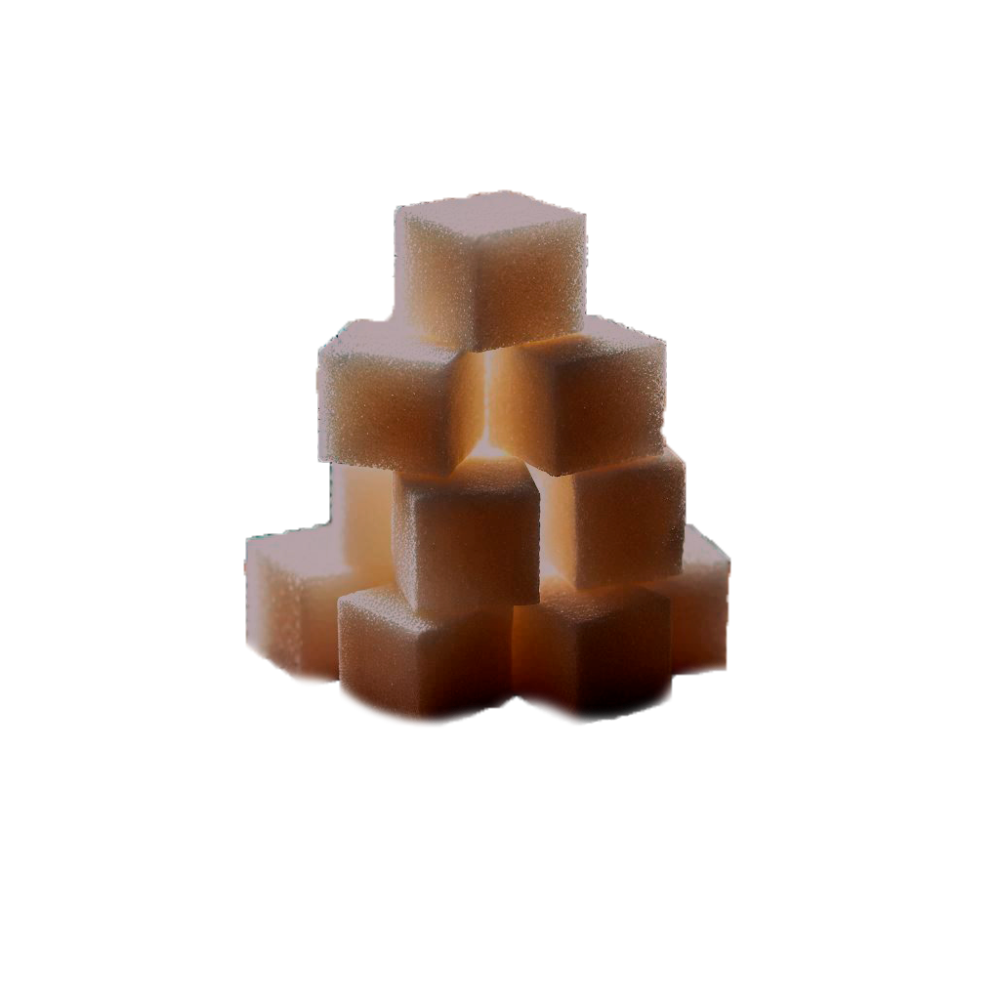
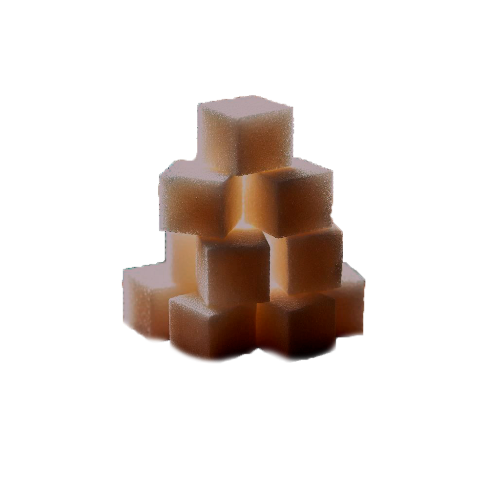

Состав
Исходное сырье
Основным сырьем для производства шоколада и какао-порошка являются какао-бобы — семена какао-дерева, произрастающего в тропических районах земного шара. Наименования товарных сортов какао-бобов соответствуют названию района их производства, страны или порта их вывоза (Гана, Баия, Камерун, Тринидад и др.) По качеству какао-бобы подразделяют на две группы:
•благородные (сортовые), обладающие нежным вкусом и приятным тонким ароматом со множеством оттенков (Ява, Тринидад и др.);
•потребительские (ординарные), имеющие горький, терпкий кисловатый вкус и сильный аромат (Баия, Пара и др.).
Какао-бобы находятся в мякоти плода какао-дерева по 30—50 шт., имеют миндалевидную форму и длину около 2,5 см. Боб состоит из твердого ядра, образованного двумя семядолями, зародыша (ростка) и твердой оболочки (какаовеллы).
Какао-бобы свежесобранных плодов не обладают вкусовыми и ароматическими свойствами, характерными для шоколада и какао-порошка; они имеют горько-терпкий привкус и бледную окраску. Для улучшения вкуса и аромата их подвергают на плантациях ферментации и сушке.
Основными компонентами сухого вещества какао-бобов являются жиры, алкалоиды — теобромин, кофеин (в незначительных количествах), белки, углеводы, дубильные и минеральные вещества, органические кислоты, ароматические соединения и другое.
Полуфабрикаты
В процессе обработки бобы очищают, сортируют и обжаривают, дробят в крупку, которую размалывают в жидкую массу. Жир составляет 52—56 % сухих веществ какао-боба; он называется масло какао. При температуре 25 °С масло какао твердое и хрупкое, а при 32 °С — жидкое, поэтому во рту оно плавится без остатка.
В процессе технологической обработки из какао-бобов получают полуфабрикат — какао тертое. Из этой жидкой массы на специальном прессе производят отжим какао-масла, после чего в прессе остается какао-жмых. Какао тертое и масло какао с сахарной пудрой используют для приготовления шоколада, а из какао-жмыха получают какао-порошок.
Шоколадная масса изготавливается из смеси сахара (как правило, сахарной пудры), тертого какао и масла какао, с добавлением вкусовых и ароматических ингредиентов. Смесь измельчается с помощью меланжера (твердые частицы не должны быть крупнее 20 мкм), еще раз смешивается с какао-маслом, охлаждается до 30—31 °C, после чего поступает в автомат для формовки.

 
